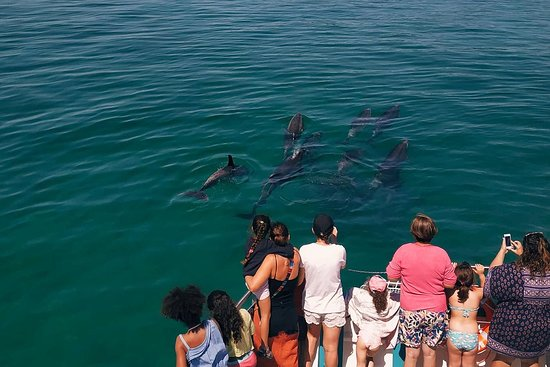

"Dolphin Bay"

About Dolphin Bay PT
Dolphin Bay is the most recent entrepreneurship project at Baía de Setúbal, a young team,
with extensive experience in dolphin watching, composed of marine biologists.
The new electric propulsion catamaran and the experienced crew ensure that your visit has a minimal impact
on dolphins, fully respecting all international rules and the code of conduct.
Source: https://www.tripadvisor.pt/Attraction_Review-g189163-d17442367-Reviews-Dolphin_Bay_PT-Setubal_Setubal_District_Alentejo.html
"Troia Casino"
Troia Casino
The new Casino de Tróia is a dynamic, innovative and sophisticated space. With about 4000 m2, it stands out for its bold
contemporary architecture and for its ambitious and unique interior decoration project. The gaming area, with 226 slot machines and 16 gaming tables,
has a unique technology capable of adapting the offer to the customer's preferences in real time. This space also features an innovative project,
based on a giant screen and three multimedia spheres. The casino features a versatile entertainment center designed by architects specializing in sound
and light and equipped with the latest and most sophisticated technologies.
Source: https://www.allaboutportugal.pt/pt/grandola/cultura/casino-de-troia
"Alegro Shopping Center"
Shoppping Alegro
The Alegro Setúbal is the first shopping center in the region. With a privileged location, overlooking the Serra da Arrábida and the Sado river,
this shopping center integrates the surrounding space, respecting and praising it. Alegro's dynamism, values and quality assurance are present and associated with Setubal origins.
More than a shopping centre, Alegro Setúbal is also a space for leisure and relaxation. Here you will find a cinema, several shops, services, the Auchan hypermarket and many free cultural activities.
Source: https://www.facebook.com/AlegroSetubal/
"Arrábida Padel"
Arrábida Padel
The Arrábida Padel, which is located in Vila Nogueira de Azeitão, municipality of Setúbal, 15 minutes by car from the famous beaches in the area.
The club has four outdoor courts — each with 200 square meters — with floodlights and an incredible view of the Serra da Arrábida.
According to the two founders, the club has all the conditions to organize official competitions, social tournaments or simple challenges between friends.
Source: https://www.nit.pt/fit/clube-de-padel-com-vista-para-a-serra-da-arrabida-abre-este-domingo
"Palmela International Karting Track"
Palmela International Karting Track
Located next to the beautiful slope of Palmela, the complex is distinguished by a set of truly exceptional features, with special
emphasis on the 1,270m perimeter and 10m of constant width of the track, as well as the 1,500m2 of support infrastructure area .
Source: https://www.visitportugal.com/pt-pt/NR/exeres/BB66CC9F-1649-4148-9A3D-A2B3D5FE7632